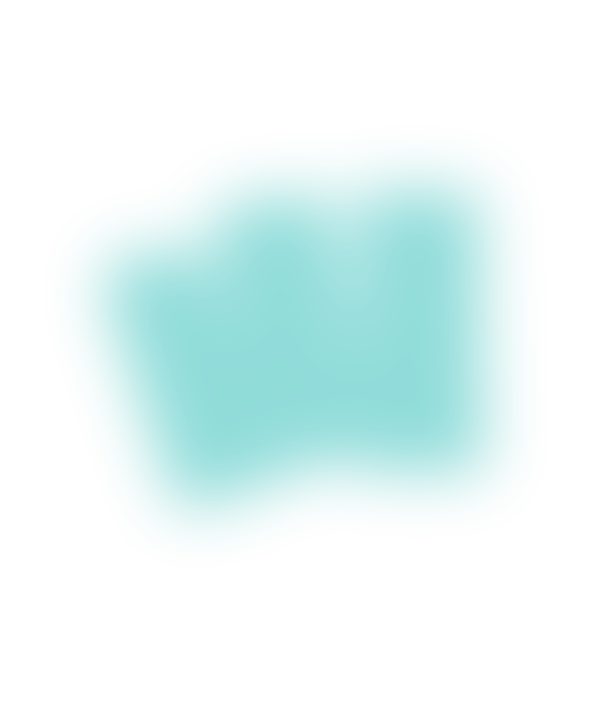
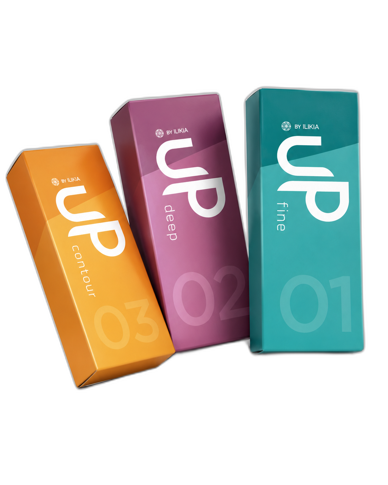

Tecnologia R²
Naturalidade que você vê.
Naturalidade que você vê.
Segurança que você e o seu paciente sentem.2
Toda a Linha UP foi desenvolvida com a Tecnologia R², que possui um processo de reticulação inteligente1, permitindo entregar resultados mais naturais e ao mesmo tempo duradouros.3
- Reticulação inteligente
- Integração tecidual superior
- Resultados duradouros


Linha UP · 03 produtos